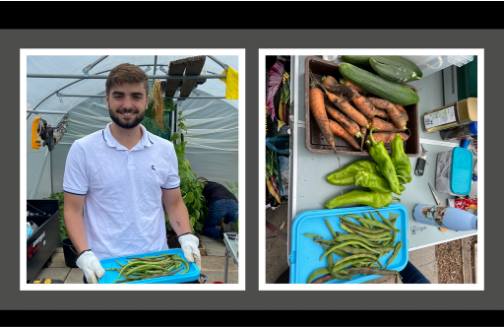
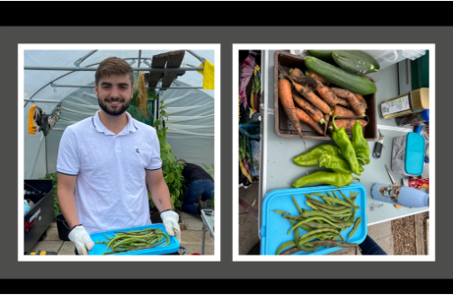

The key to multiculturalism is in
finding common ground
A s a student at the University of South Carolina’s Darla Moore School of Business pursuing a degree in International Business and Finance, the first major lesson I learned was the inherent value of diverse perspectives in the workforce, particularly in strategic planning and management. In this insight, I will draw from my experiences in class with Professor Hudgens, my experiences moving through France as an exchange student, and my work experience in Scotland. In the classroom, group projects and discussions helped me begin to open my mind to working in groups with vastly different cultural backgrounds. Even something as basic as how we expressed approval or disagreement with one another’s ideas varied so much that conversations could easily create friction if we weren't careful. Taking those lessons with me when I went abroad was a big part of how I was able to get along with international students so easily, and eventually, it helped me work through cultural differences to forge lasting friendships. For the purposes of this insight, however, I will focus on how my experience in the classroom and my observations of cultural differences strengthened my performance and aptitude for engagement in Scotland to demonstrate that both classroom theories and real-world experience show the significance of being able to connect with foreign cultures in a way that reduces friction between conflicting cultural aspects and ultimately forges to a stronger relationship.
I n Dr. Hudgens’ course, Globalization and Business IBUS 310, we were encouraged to observe and investigate how international commerce operates on a global scale. Through our readings, we explored how even the most basic items—our tools, snacks, shoes, and phones—have traveled through multiple countries before reaching our shelves in the U.S. While much of the class was practically focused on global value chains (GVCs) and the logistics of international trade, we prefaced this practical work with readings on different frameworks that companies use to evaluate countries when making business decisions. These frameworks include the CAGE framework, which assesses one culture’s “distance” or degree of difference from another, and the Onion and Iceberg models of culture, which highlight different ways to visualize the visible and hidden components of a culture. These frameworks still resonate with me today and continue to shape how I view foreign cultures and multicultural experiences through a more objective and analytical lens. For instance, the CAGE framework allows me to adapt my behavior around different groups of friends to align more closely with the cultural characteristics they value. In a professional context, understanding cultural distance helps me navigate power dynamics and workplace expectations based on the administrative distance of different cultures.
O ver the summer in France, one of the requirements of my program was to spend a month engaging in work experience to gain a stronger grasp of working in an international context while also contributing to a community of my choosing. I decided to spend my month in Ayrshire, Scotland, working for a nonprofit called RecoveryAyr, which focuses on rehabilitating and supporting individuals struggling with addiction, criminal records, and mental health challenges. This experience pushed me to engage more deeply with a foreign culture without the support system of friends or family nearby.
One of the most tangible artifacts from this experience is a presentation I delivered at ESSEC Business School in Paris, where I defended my experience in a Pecha Kucha format. The presentation included photos from my activities with the group, such as working in a community garden that provided ingredients for a weekly recovery diner, organizing a drug- and alcohol-free concert for recovery communities across Scotland, participating in a Pride parade in Glasgow to support LGBTQ+ members of RecoveryAyr, and preparing for a fundraiser by crafting toys and bracelets to sell.
Scotland has the highest drug-related death rate in the EU, making the fight against addiction a pressing issue. Through this experience, I participated in discussions about legal reforms and community efforts aimed at addressing the crisis. Despite the cultural barriers I initially faced—such as accents, colloquialisms, and workplace norms—I was able to adapt and connect with the community, building strong, trusting relationships within the organization.
D r. Hudgens’ IBUS 310 course provided a strong foundation for understanding cultural differences in a global context. We explored different philosophies of cultural analysis, practiced using frameworks like CAGE, Iceberg, and Onion to make arguments, and collaborated on group projects with students from diverse backgrounds. While these concepts initially seemed theoretical, I quickly realized their practical applications when working abroad.
For example, the CAGE framework helped me analyze why certain cultures were easier to engage with than others. Once I identified the cultural “distances” that created friction, I could adjust my behavior to find common ground. This skill was particularly useful in Scotland, where I noticed that the administrative distance was much less pronounced than in the U.S. In Scottish culture, leadership roles are often viewed more horizontally, meaning that authority figures are not necessarily treated with the same level of formality as in the U.S. Recognizing this allowed me to adjust my approach, making it easier to collaborate with my colleagues and integrate into the community.
T hrough both classroom learning and real-world experience, I have come to understand that the key to effective multicultural engagement lies in finding common ground. The theories and frameworks I studied in class, particularly the CAGE framework and cultural models, provided me with a structured way to analyze cultural differences. However, it was my hands-on experience in Scotland that truly reinforced how practical and valuable these insights can be.
This experience has significantly changed my approach to working in multicultural environments. I now recognize the importance of active cultural adaptation rather than simply expecting others to conform to my own cultural norms. Moving forward, I plan to apply these lessons in my professional career, ensuring that I foster inclusive and productive environments where cultural differences are acknowledged and leveraged for success. Ultimately, understanding cultural frameworks is just the beginning—the real key to multiculturalism is in learning how to bridge those differences and create meaningful connections.
- Artifacts -


 
